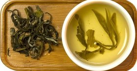
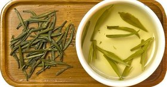
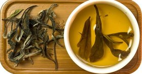
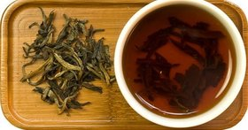
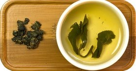
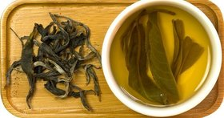
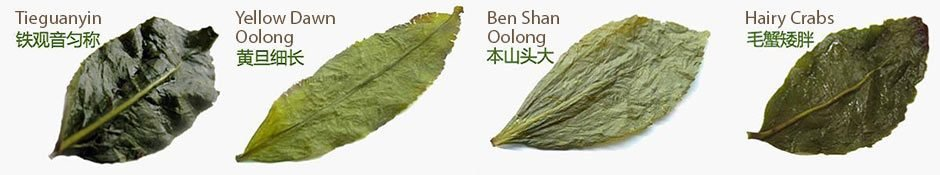

Зеленый чай - самый нежный по обработке. Поэтому чайный напиток получается наиболее приближенным по химическому составу к еще растущему чайному листу. Освежает, дарит бодрость и укрепляет организм.

Желтый чай - тот же зеленый чай, но прошедший через процедуру томления. Менее раздражителен для желудка, чем зеленый чай. Необычный по вкусу, но достаточно редкий, так как процесс изготовления сложен и кропотлив.

Белый чай проходит небольшую обработку. Изготавливается из определенного сорта куста и в Китае считается больше лекарственным средством, нежели просто вкусным напитком. Может употребляться ежедневно как противораковое лекарство в загрязненном мегаполисе.
На главную

Красный чай в Европе известен как «черный». Успокаивающий и согревающий, несущий в себе энергию огня. Хорошо повышает иммунитет и дает силы. У нас незаменим в застолье со сладостями, хотя обычно китайский чай пьют как самостоятельное блюдо, без добавления других продуктов.
На главную

Улун - сложный в изготовлении чай, обладающий яркими фруктовыми или цветочными ароматами. Очень вкусный и разнообразный. Сейчас крайне популярен для похудания, так как содержит большое количество полифенолов, которые помогают сжигать жир.
На главную

Черный чай - особый вид чая. Знаменит своей необычной технологией производства, и как следствие - особым вкусом, запахом и воздействием на организм. Самый известный черный чай - пуэр, изготавливают только из сырья чайных кустов и деревьев провинции Юньнань по двум различным технологиям: шу и шэн пуэр.
На главную
Деление на виды возникло на основе применения различных технологий к изготовлению сухого чая из сырого листа. Можно привести грубый пример, что при желании возможно приготовить все эти виды чая с одного куста. Таким образом чай, сделанный по технологии улуна, будут называть «улун», хотя по вкусовым качествам он может и не соответствовать ожиданиям. Для каждого из перечисленных видов, кроме технологии обработки, важны и многие другие нюансы.
Территория сбора чая
Климат в Китае не однородный, и в разных регионах чай вырастает в различных условиях. Он растет на разных почвах, на разных высотах и в разных температурных режимах, поэтому в его листе накапливаются разные вещества, которые и влияют на вкус и аромат сухого чая. Например, в Юньнани множество крупнолистовых чайных деревьев, а в Фуцзяни - в основном кустовой мелколистовой чай.
Условия произрастания.
Существуют некоторые виды чаев, которые произрастают в особых условиях. Например, Изумрудные спирали весны высаживают среди фруктовых деревьев, поэтому аромат чайного листа несет в себе фруктовые оттенки, которые нежно открываются при заваривании. На одной и той же горе - у подножия, в средней части и на вершине - вырастет чай, отличающийся по вкусу, и цениться он будет по-разному.
Сорт чайного куста.
В Китае растут чайные деревья, достигающие высотой 20 метров и более, и чайные кусты. Выделяют разные чайные листья - широкие, узкие, круглые, маленькие. Есть особые кусты для белого чая - с густым белым ворсом. А есть куст Тегуаньинь, который дал название целому направлению улунов и отличается тяжелым, грубым листом. Это лишь немногие примеры, которые иллюстрируют, что для каждого сорта чая подходит только определенный сорт куста. Не путайте, пожалуйста. Зеленый чай можно сделать с любого чайного куста, так как «зеленый» говорит о технологии обработки листа. Но Колодец дракона с озера Си Ху можно сделать только с определенных кустов, растущих в определенной местности.
Время сбора.
У каждого вида чая свой период сбора. Иногда с одного и того же куста в разное время могут сделать различные чаи: белый чай из почек в феврале, красный чай из типсов в марте и зеленый чай из листьев в апреле. Но обычно все же делают один вид чая, который различается качеством в зависимости от периода сбора.
Лист для обработки.
Для каждого сорта чая берется определенный лист чайного дерева. Есть чаи, которые изготовляют только из почек, другие - из типсов (мы будем использовать это определение для сырья: почка и один-два листа), некоторые - только из крупных листьев, а есть даже такие, для производства которых требуется целый побег с несколькими листьями. Отбор нужной части листа для производства чая происходит не на фабрике, а еще при сборе. Технологи дают четкие указания сборщикам, какое сырье нужно собирать сегодня, для производства чая.

И уже после учета всех нюансов технология производства, отточенная столетиями, дает возможность получить необходимый сорт чая. Но о технологии чуть позже.
Если вы решили попробовать все виды чая, чтобы составить представление об их вкусе, стоит запомнить, что для каждого из этих шести видов существуют свои особенности заваривания по температурному режиму, посуде, количеству чая, а также лучшему способу раскрытия его вкуса и аромата.